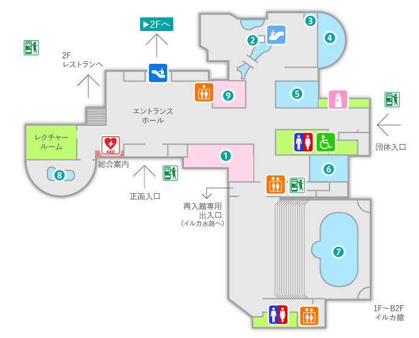

ネオンテトラは体長3〜4cmの小さな熱帯魚で、青と赤のラインが特徴です。水槽の中でも目立つ存在です。
ネオンテトラは南米アマゾン川流域原産の淡水魚で、温和な性格をしており群れで行動します。水質には敏感ですが初心者にも人気のある種類です。適温は22〜27℃程度。
「水槽の中を華やかにしたいなら、この子たちが一番！みんなでスイスイ泳いでかわいいですよ〜」
（飼育員 ゆっきー）
アマゾン川(アマゾナス川)の流れの緩やかな場所に生息。自然では群れで泳いで身を守ります。
Q1：ネオンテトラの青い光はなぜ光る？
Q2：ネオンテトラの体色に見られる「構造色」とは何ですか？
ネオンテトラは一度に100個以上の卵を産みますが、親が卵を食べてしまうため、繁殖時には隔離が必要！
ネオンテトラは2階熱帯魚展示室の中央水槽にて展示しています。青と赤の美しい光が目印です。
